La grille est utilisée pour réaliser plus facilement des mises en page complexes de sites Web, car elle n'est pas difficile à maîtriser. Avec Flex, vous ne pouvez créer qu'une mise en page 1D, mais Grid vous donne toute la puissance nécessaire pour créer une mise en page 2D. Tout d'abord, commencez par donner la propriété d'affichage "grid" à l'élément conteneur ou élément parent.
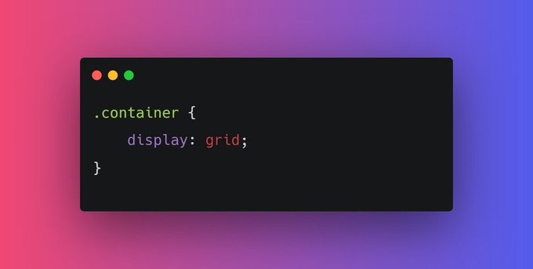Rien ne changera après avoir ajouté display : flex ; dans le conteneur parent, car nous devons définir la largeur des colonnes. Afin de définir la largeur de cette colonne, nous avons la propriété `gird-template-columns`.
Commençons par définir la largeur de nos colonnes. Par exemple, j'ai besoin de deux colonnes d'une largeur de 60% et 40% respectivement. `grid-template-columns : 60% 40%;`
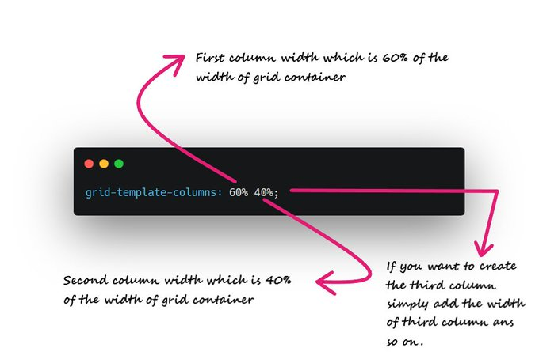 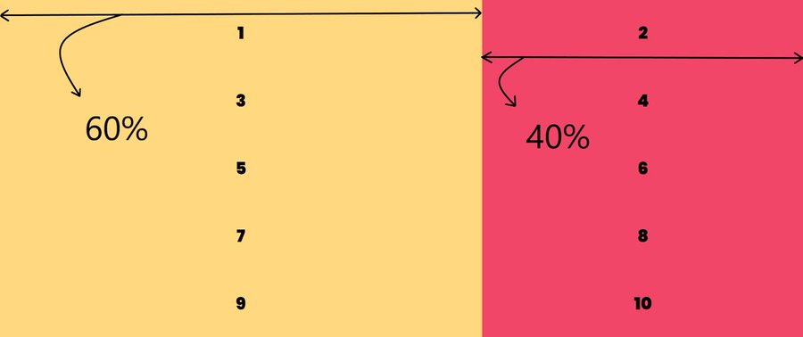Les éléments de ma grille sont moches car il n'y a pas d'espace entre eux. C'est ici que la propriété "grid-gap" entre en jeu. Par exemple, j'ai besoin d'un espacement de 10px entre les colonnes et les lignes. `grid-gap : 10px;`
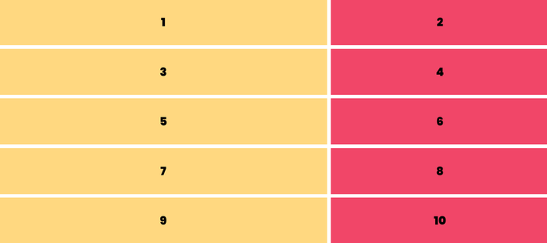De même, nous avons grid-template-rows. Elle est utilisée pour définir le nombre de rangées et la hauteur des rangées. `grid-template-rows : 200px 400px;`
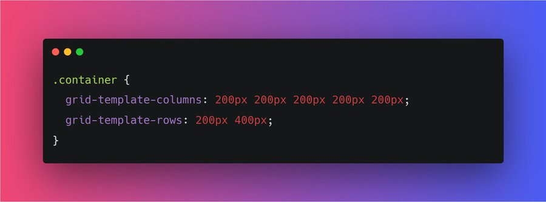 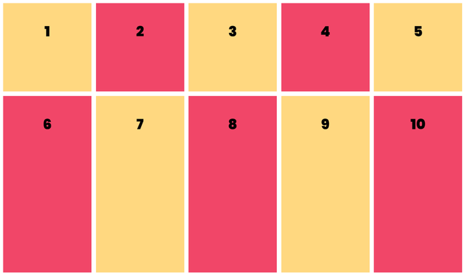Comme vous pouvez le voir, il y a beaucoup de code répété dans grid-template-columns : 200px 200px 200px 200px 200px 200px ; Au lieu de cela, nous pouvons utiliser la fonction repeat : `grid-template-columns : repeat(5, 200px);`
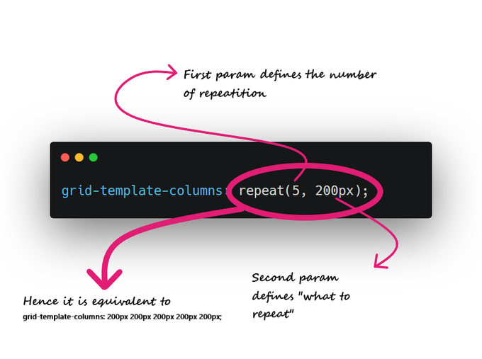Vous pouvez rencontrer des problèmes de réactivité si vous passez une unité de pixel ou un pourcentage dans vos colonnes de modèle de grille. Afin d'éviter cela, il est recommandé d'utiliser des fractions. Par exemple :
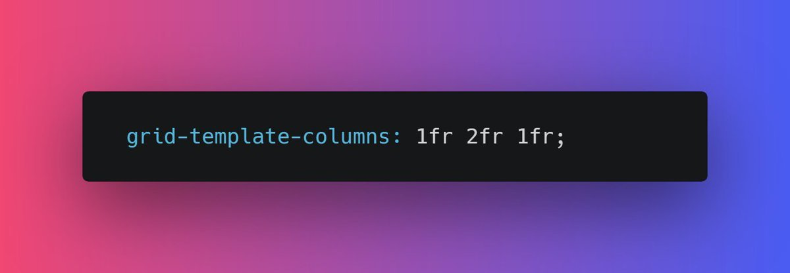 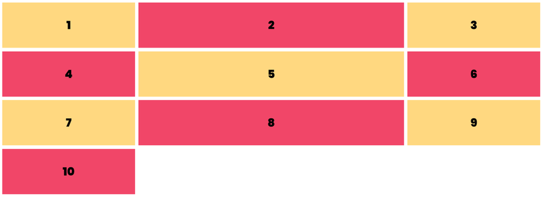Vous pouvez également utiliser la fonction repeat pour `fr`. repeat(2, 1fr 2fr) ; Cela va répéter 1fr 2fr deux fois.
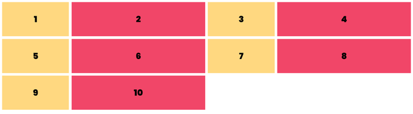Pour aller plus loin, vous pouvez définir la hauteur de l'élément de grille en utilisant grid-auto-rows. `Par ex, grid-auto-rows : 200px;`
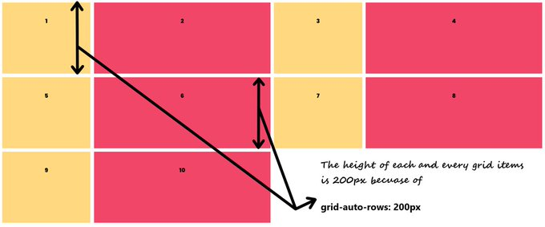Mais il y a un problème : en faisant cela, nous définissons une hauteur fixe et le contenu des éléments peut déborder. Par exemple :
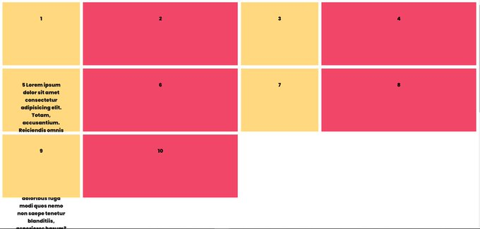Afin d'éviter ce genre de problème, nous avons la fonction `minmax`. grid-auto-rows : minmax(200px, auto) ; Il est assez intuitif que la hauteur des éléments de la grille sera de 200px minimum et "auto" maximum (selon le contenu).
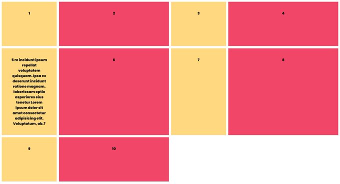Nous pouvons faire tout ce que nous avons couvert jusqu'à présent en utilisant également la flexbox. Comprenons les deux dimensions de la mise en page `grid`.
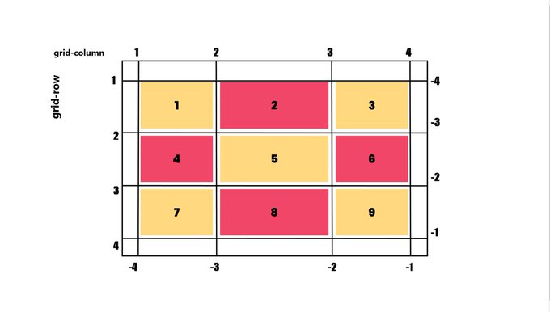Nous pouvons modifier la position d'un élément particulier en fonction de la ligne et de la colonne. Par exemple, je veux que mon premier élément occupe une ligne entière, de la première à la dernière colonne. `grid-column: : 1 / 4;`
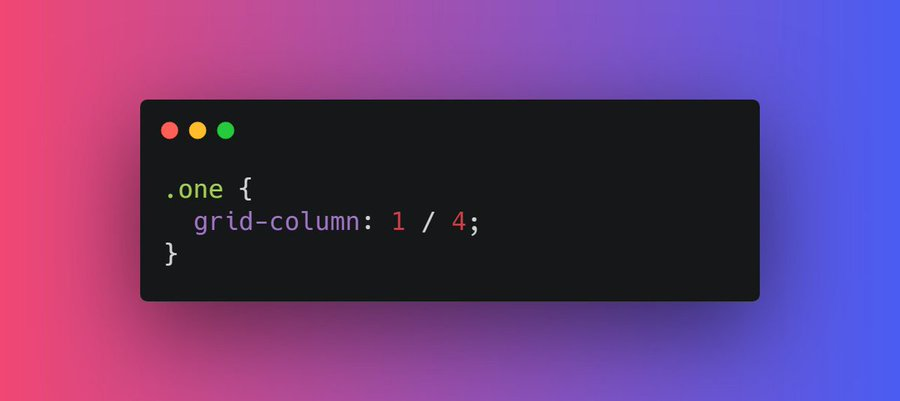 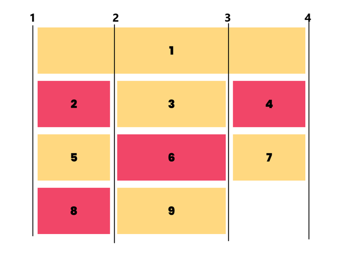La prochaine propriété que nous avons est `grid-template-areas` qui spécifie les zones dans la disposition de la grille. Chaque ligne est définie par des apostrophes (' ') Cela vous semble confus ? Voyons cela en action.
Décomposons ce code. grid-template-areas : 'areaName areaName areaName areaName areaName' ; • Chaque ligne est définie par des apostrophes (' ') • Donc une seule ligne dans ce cas car il n'y a qu'une seule paire d'apostrophes • Cinq "areaName" donc cinq colonnes SUITE...
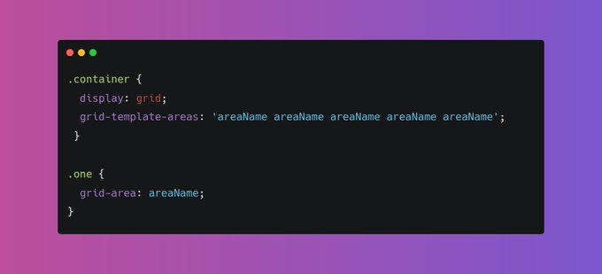Appliquons maintenant cette zone (areaName) au premier élément de la grille. .one { grid-area : areaName ; } Comme vous pouvez le constater, l'élément 1 occupe une ligne entière et 5 colonnes. Aussi simple que cela
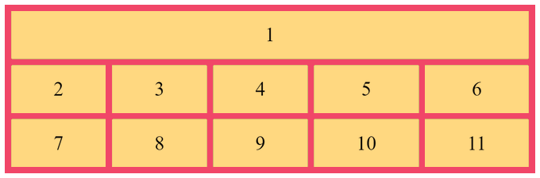